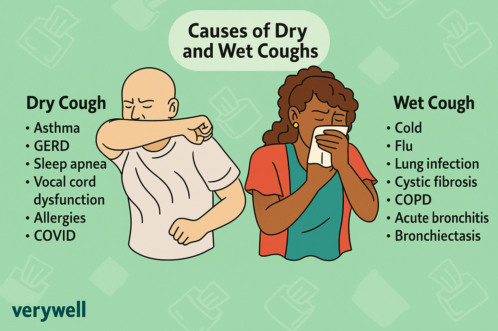
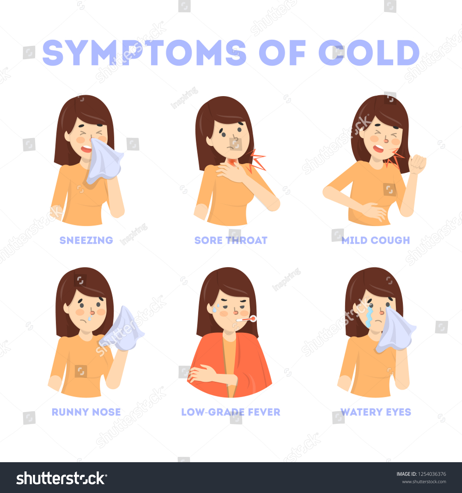
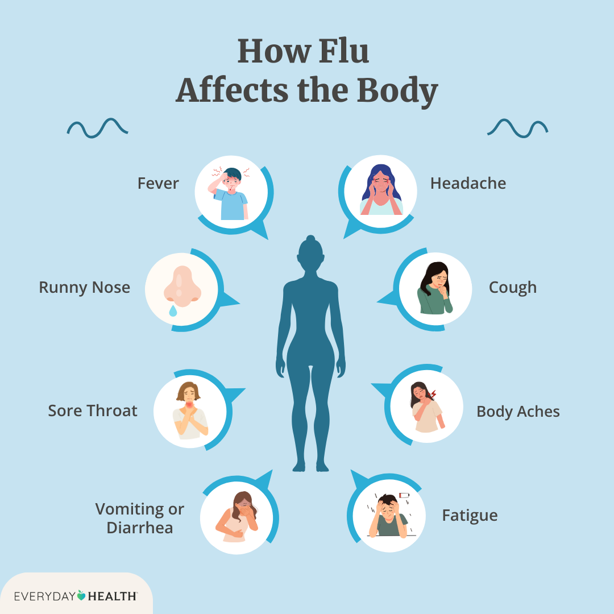
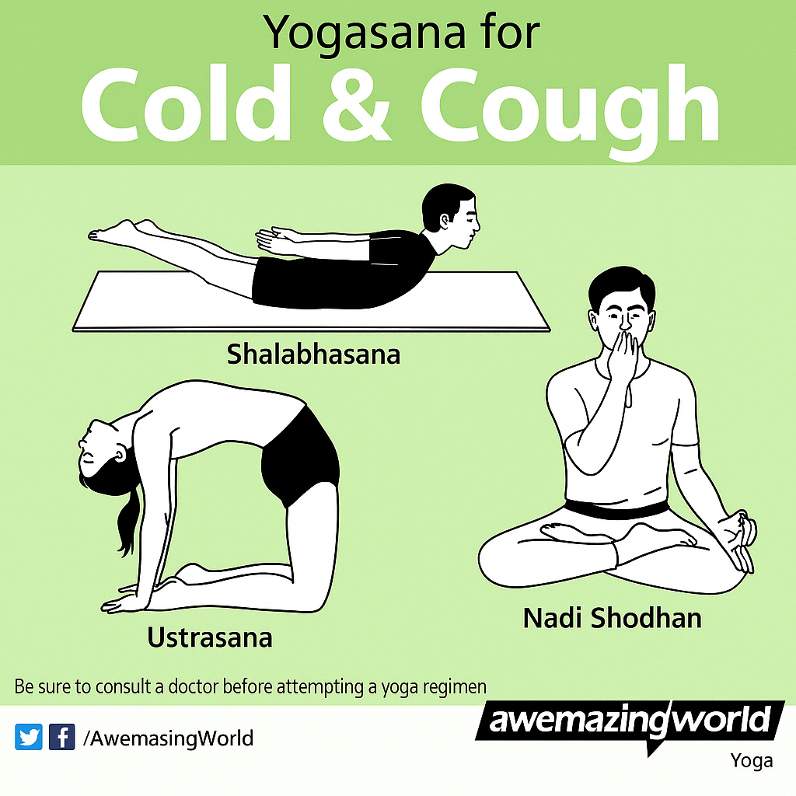

Understanding Cold and Cough

Causes
- Viral Infections – Common cold viruses.
- Weather Changes – Sudden temperature drops.
- Dust & Allergens – Irritate respiratory tract.
- Weak Immunity – Body can't fight off germs.
- Smoking – Irritates and damages throat.

Symptoms
- Runny Nose – Excess mucus production.
- Sneezing – Irritation in nasal passage.
- Sore Throat – Pain or irritation while swallowing.
- Cough – Dry or with phlegm.
- Mild Fever – Body’s response to infection.

Effects
- Sinus Infection – Inflammation and pain.
- Bronchitis – Prolonged chest congestion.
- Ear Infections – Common in children.
- Throat Infections – From constant irritation.
- Fatigue – Due to poor sleep and low immunity.

Prevention & Cure (Ayurveda)
- Herbal Support – Use Tulsi, Mulethi, Ginger, and Turmeric.
- Satvik Diet – Warm soups, herbal teas, and avoid cold items.
- Lifestyle & Yoga – Steam inhalation and light breathing exercises.
- Detox Therapies – Nasya (nasal drops) and herbal smoking.
- Mind-Body Balance – Rest, relaxation, and staying warm.